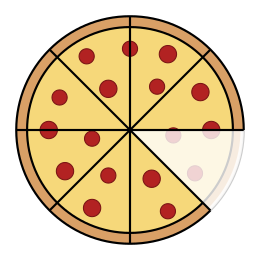
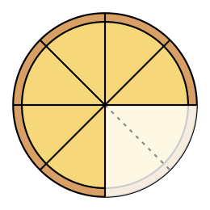
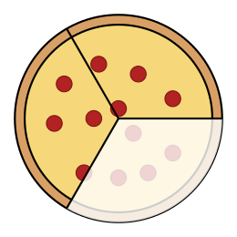
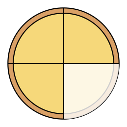

Answer: {{a}}{{f 3/8}}{{/a}} How did you know? {{a}}the slices are the same size, so just add the numerators{{/a}}


Answer: {{a}}{{f 7/12}}{{/a}} Why is this one harder? {{a}}the pieces are different sizes, so they must be rewritten first{{/a}}
{{f 2/7}} + {{f 3/7}} = {{f 5/7}}
{{/a}}{{f 11/12}} − {{f 5/12}} = {{f 6/12}} = {{f 1/2}}
{{/a}}{{f 10/15}} − {{f 4/15}} = {{f 6/15}} = {{f 2/5}}
{{/a}}Remember to {{a}}simplify{{/a}} your answer.
Multiples of 3: {{a}}3, 6, 9, 12, 15, 18…{{/a}}
Multiples of 4: {{a}}4, 8, 12, 16, 20…{{/a}}
Common denominator: {{a}}12{{/a}} Each third becomes {{a}}4{{/a}} pieces; each fourth becomes {{a}}3{{/a}} pieces.
Rewrite: {{f 1/3}} = {{f ___/12}} {{f 1/4}} = {{f ___/12}}
Add: {{a}}{{f 7/12}}{{/a}}
{{a}}{{f 1/3}} = {{f 4/12}} {{f 1/4}} = {{f 3/12}}
{{/a}}Common denominator: {{a}}8{{/a}} Answer: {{a}}{{f 5/8}}{{/a}}
{{a}}{{f 7/8}} − {{f 2/8}} = {{f 5/8}}
{{/a}}{{f 4/6}} + {{f 1/6}} = {{f 5/6}}
{{/a}}Convert: 2{{f 1/3}} = {{f ___/3}} 1{{f 5/6}} = {{f ___/6}}
Match denominators: {{f ___/6}} + {{f ___/6}} = {{f ___/6}}
Back to a mixed number: {{a}}4{{f 1/6}}{{/a}}
{{a}}2{{f 1/3}} = {{f 7/3}} = {{f 14/6}} 1{{f 5/6}} = {{f 11/6}} {{f 14/6}} + {{f 11/6}} = {{f 25/6}}
{{/a}}Answer: {{a}}1{{f 3/4}}{{/a}}
{{a}}{{f 9/2}} − {{f 11/4}} = {{f 18/4}} − {{f 11/4}} = {{f 7/4}}
{{/a}}1. {{f 3/8}} + {{f 1/8}}{{a}} = {{f 4/8}} = {{f 1/2}}{{/a}}
2. {{f 5/6}} − {{f 1/6}}{{a}} = {{f 4/6}} = {{f 2/3}}{{/a}}
3. {{f 2/9}} + {{f 4/9}}{{a}} = {{f 6/9}} = {{f 2/3}}{{/a}}
4. {{f 11/12}} − {{f 7/12}}{{a}} = {{f 4/12}} = {{f 1/3}}{{/a}}
5. {{f 1/4}} + {{f 1/6}}{{a}} = {{f 3/12}} + {{f 2/12}} = {{f 5/12}}{{/a}}
6. {{f 5/8}} − {{f 1/4}}{{a}} = {{f 5/8}} − {{f 2/8}} = {{f 3/8}}{{/a}}
7. {{f 3/5}} + {{f 7/10}}{{a}} = {{f 13/10}} = 1{{f 3/10}}{{/a}}
8. {{f 9/10}} − {{f 2/15}}{{a}} = {{f 27/30}} − {{f 4/30}} = {{f 23/30}}{{/a}}
9. 1{{f 1/2}} + 2{{f 1/4}}{{a}} = 3{{f 3/4}}{{/a}}
10. 4{{f 3/5}} − 1{{f 2/5}}{{a}} = 3{{f 1/5}}{{/a}}
11. 3{{f 1/6}} + 2{{f 5/6}}{{a}} = 6{{/a}}
12. 6{{f 1/4}} − 3{{f 3/8}}{{a}} = {{f 23/8}} = 2{{f 7/8}}{{/a}}
Answer: {{a}}{{f 7/8}} of a liter{{/a}}
Answer: {{a}}2{{f 3/4}} meters{{/a}}
Answer: {{a}}{{f 5/12}} cup{{/a}}
1 − {{f 3/8}} = {{f 8/8}} − {{f 3/8}} = {{f 5/8}}
{{/a}}{{f 14/3}} + {{f 23/6}} = {{f 28/6}} + {{f 23/6}} = {{f 51/6}} = 8{{f 1/2}} miles
{{/a}}